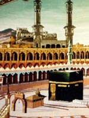

The Prophet Muhammad
The desert city of Mecca in Saudi Arabia Muhammad was born in Mecca in Saudi Arabia © Muslims believe that Islam is a faith that has always existed and that it was gradually revealed to humanity by a number of prophets, but the final and complete revelation of the faith was made through the Prophet Muhammad in the 7th century CE. Muhammad was born in Mecca in Saudi Arabia in 570. He was a deeply spiritual man, and often spent time in meditation on Mount Hira. The traditional story of the Qur'an tells how one night in 610 he was meditating in a cave on the mountain when he was visited by the angel Jibreel who ordered him to recite. Once Jibreel mentioned the name of Allah, Muhammad began to recite words which he came to believe were the words of God.The Qur'an During the rest of his life Muhammad continued to receive these revelations. The words were remembered and recorded, and form the text of the Holy Qu'ran, the Muslim scripture.
Audio journey
Muhammad: an audio journey Sand dunes and dry, tough plants are visible in a desert landscape similar to Muhammad's own surroundings Desert landscape. In the Footsteps of Muhammad, Edward Stourton traces the roots of Islam; the history of the prophet, and the impact this mystic and warrior has on international affairs today. Mecca In the year 610 a 40 year old illiterate trader in the deserts of Arabia received a revelation that would change the world. Islam is now the second most popular religion on the planet with more than a billion followers.
Jerusalem
Jerusalem is the third holiest site in Islam: the first Muslims didn't pray towards Mecca, but to Jerusalem. This episode explores the theory that Islam may have grown out of a cult of Judaism. It also explores the meaning of jihad and how the life of the prophet and the battles against the pagan Meccans have been used to justify suicide bombings. The Alhambra Palace is perhaps the finest surviving Muslim palace in the world and its symbolic of an episode that many Muslims believe has been all but written out of the history books by Europe's Christians: the flowering of Islam culture, philosophy and science, which meant that once the intellectual heart of Europe beat not in Paris, Rome or Athens.
Latest Article
Popular Post
Jerusalem is the third holiest site in Islam: the first Muslims didn't pray towards Mecca, but to Jerusalem. This episode explores the theory that Islam may have grown out of a cult of Judaism. Reading
Discover History
Popular Post

According to some legends,when the Virgin Mary appeared to Emperor Justinian in a vision first as a gazelle and then as an icon asking him to build a monastery in her honor,he did not hesitate and soon the monastery was founded in 547 AD.That rumored miracle made the chapel widley famous and it became the second most famou pilgrimage destination in the east,after Jerusalem. Reading
More Information
- R4-In Our Time Sunni and Shia Islam
- Heart and Soul - Reciting the Qur'an
- Beyond Belief - Sunni and Shia Islam
- In Our Time - Sunni and Shia Islam
- R4 - In Our Time - Islamic Law
- Heart and Soul: The Black Cube
- R4 - In Our Time - The Arab Conquests
- BBC Religion - Muslim Spainv
- R4 - In Our Time - Muslim Spain
- R4 - Beyond Belief - Islam in Europe
- R4 - In Our Time - Islamic Law
- Heart and Soul: The Black Cube
- Beyond Belief - Sunni and Shia Islam